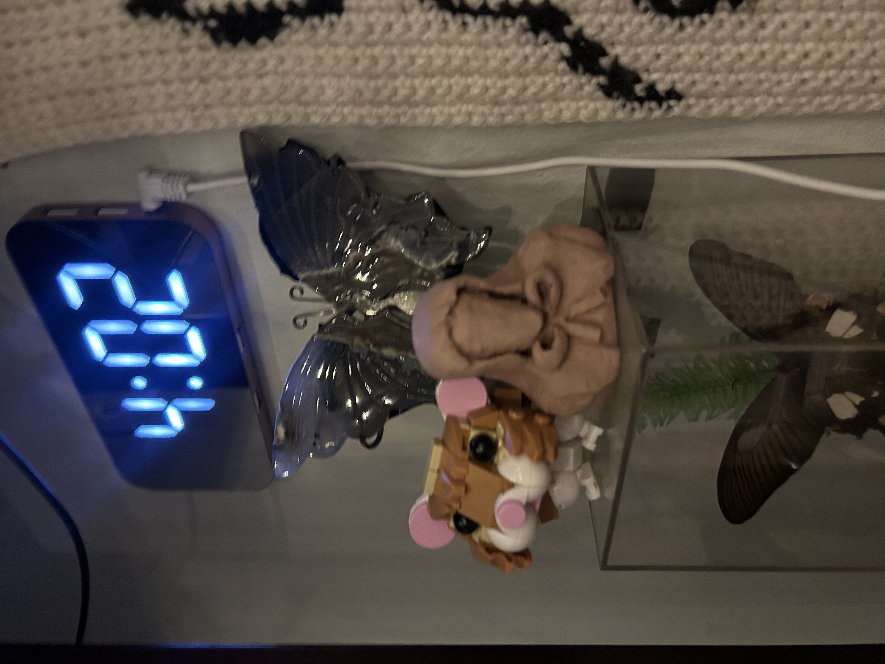
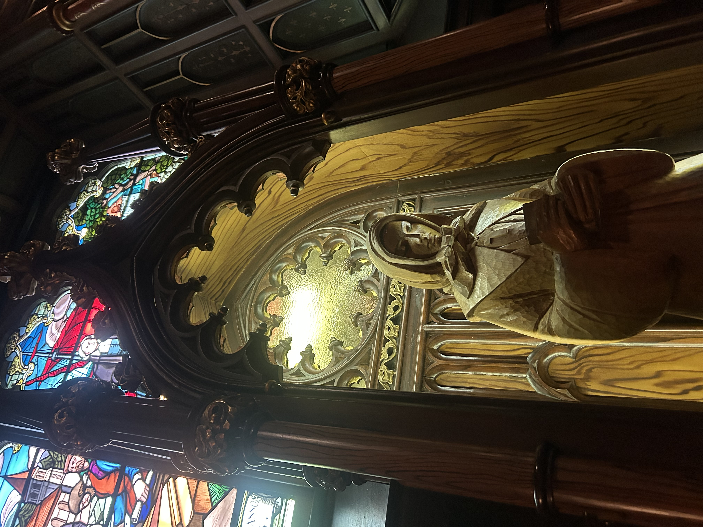
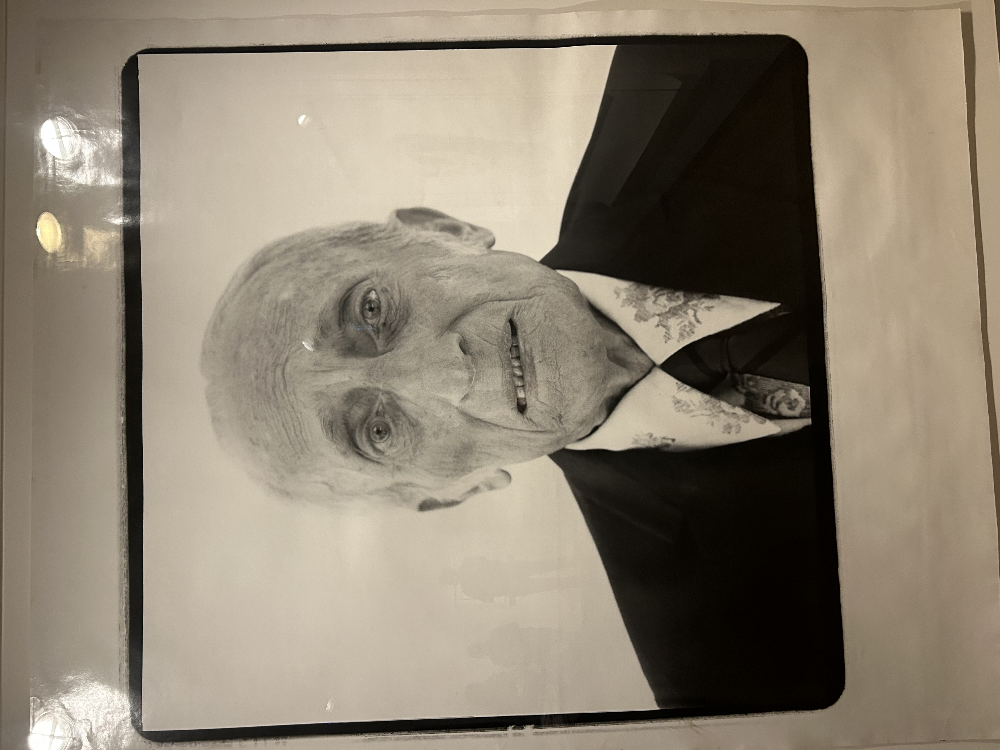
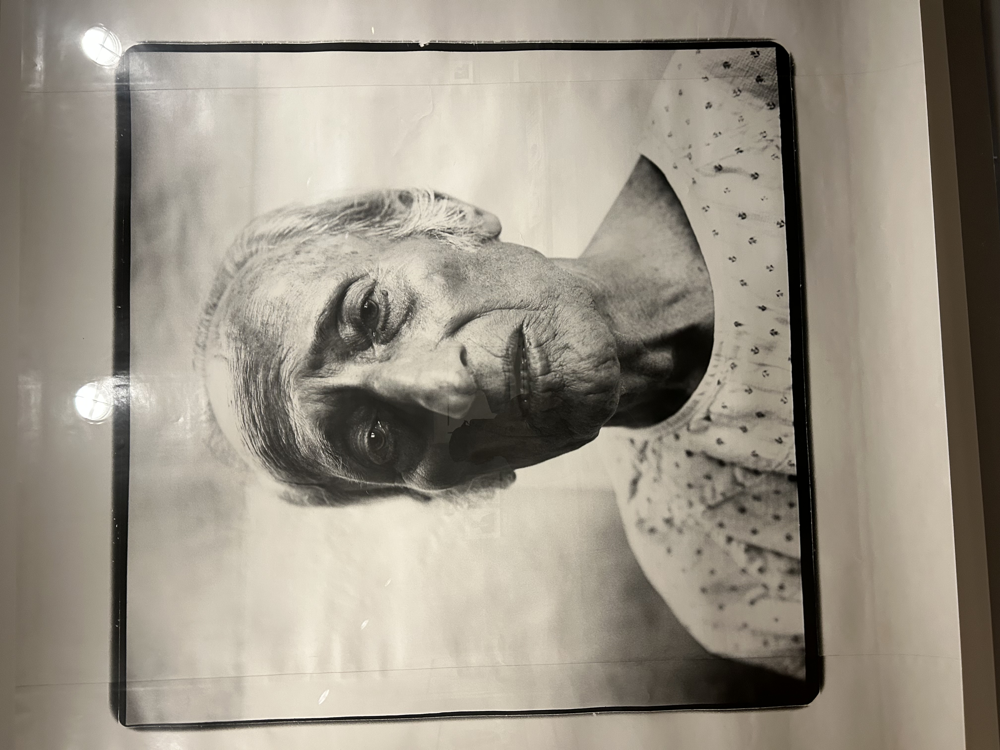

Since I was alone in Canada, I went to a million museums. I'm writing this a week later, so my perception is skewed. It was maybe 5, but they were quality. In this essay I will be covering the Montreal Fine Art Museum, the Insectarium and Globe/Zoo thing (both Montreal), the AGO in Toronto, and the National Quebec Museum in Toronto. Not a single one of these names is correct because I don't want to search this up. I would say the most important was the Montreal Fine Arts They were open late the night I got there, but then I found out only 1 of 5 buildings was open when I got there. Luckily, I wa wandering around and I found they have an open studio. I thought it was very special because it was at the same time I was there, but apparently they have in multiple times a day. I did clay and I tried to recreate a wooden sculpture I had seen in the church, and mine came out just so scary. But, it was cute, I got to meet a bunch of people who live in Montreal, and chitchat for 2 hours while playing with clay. Then, the museum closed, so I went to get poutine and beer, then I went home.


I think the next day I went back to see everything. There was a different theme for each building- there was a contemporary, a traditional/European old shit, and then so many Canadaian
artists. It was really trippy in the contemporary part of the Canadaian building I thought I recognized the artists, but they were Canadaian versions of the artists I know. Like
an alternate reality Pollock and Sydney Shermann. The main exhibition was greek and roman sculptures. I care a little bit, and I tried to read about the history, but I've seen a
lot of these and they all sort of look the same. Maybe if you don't go to art museums often it would be interesting. Again, this was a week ago, so I don't remember everything, and I'm gonna reference
my pics. The most shocking to me culturally was the emphasis on Canadian art. I forget that other countries have pride in their artists, because the US can assume we're the epicenter of
culture. There is no reason to emphasize the art is American, unless it is important context to the meaning. The different styles were all covered in the Quebec building. There was a whole
floor on the landscapes in a style that reminded me of grandma Hiduke's oil paintings. They had similar sections in every other art museum I went to on this trip.
The best
exhibition from this place was a New York photographer who took pictures of celebrities when they're old. You feel nostalgic, but also so sad- some are days before they died.
It was unsettling, but cool. Then, they had a room at the end that was a specific project of this guy taking photos of his dad as he is dying. You can see his mental decline and the
stages of taking care of someone dying. There was an added layer of them having a complicated/bad relationship which shows in the portrait somehow. Then the last 2 pics were 2 weeks
before his dad died and a day before he died. In the 2 weeks he looks so terrified, and when he is dying he looks at peace. The direct eye contact with the camera is so crazy, I could
cry right now. I think the way that old people regress when they are going because they are so afraid it seems childish. It was so beautiful.

